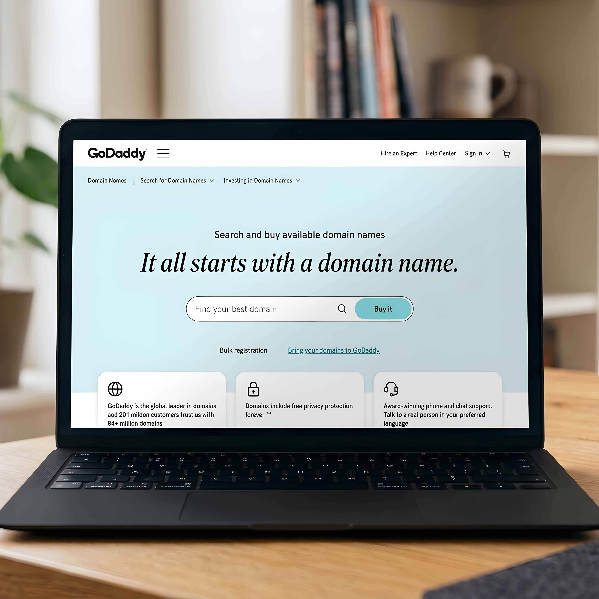
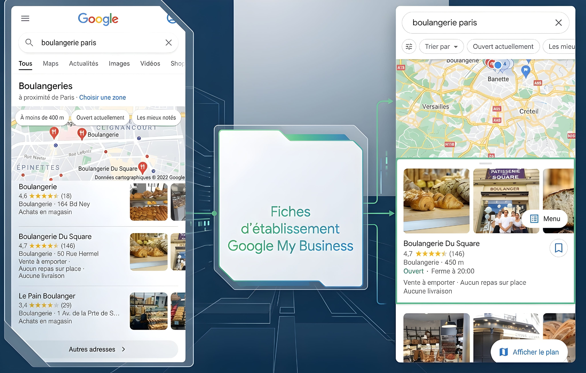
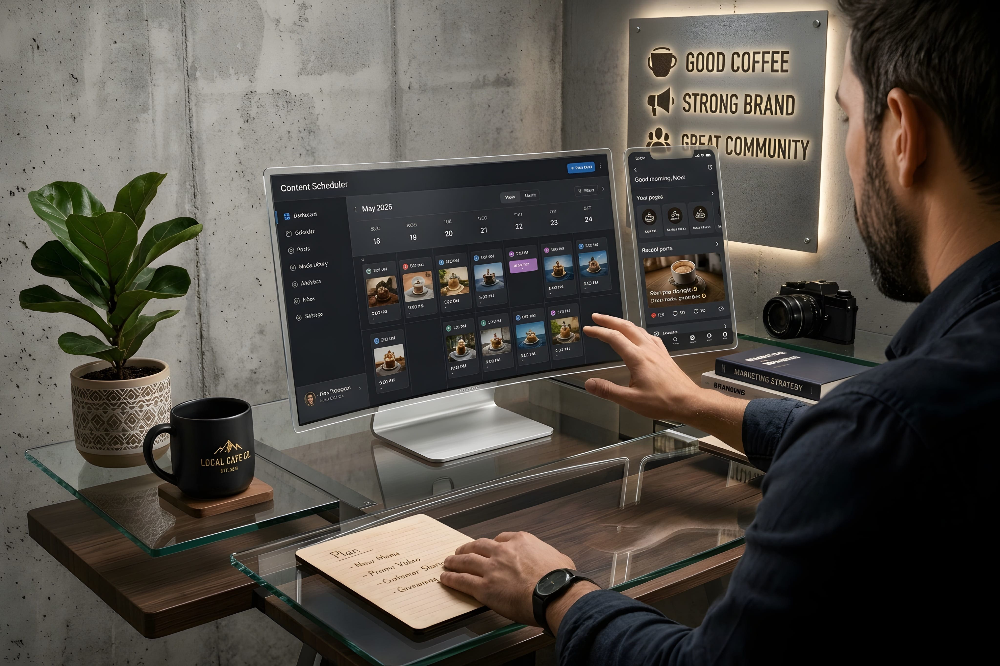
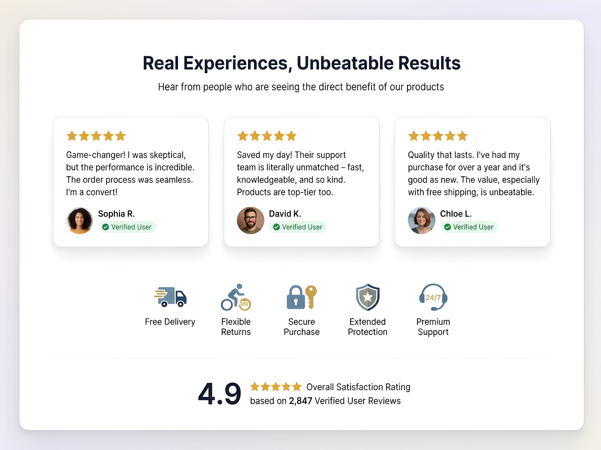
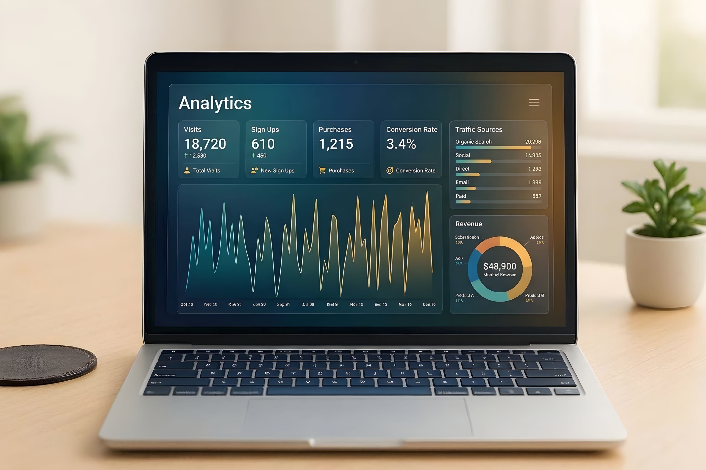

Building a strong online presence is no longer only for large companies. Small businesses, startups, freelancers, and independent professionals also need a clear and useful way to be found online. When people hear about your business, they often search for it before they decide to contact you or make a purchase.
Your online presence includes more than a website or a social media account. It is the complete picture people see across search engines, business listings, social platforms, email, reviews, and other digital channels. These places should work together and give people accurate, helpful, and consistent information.
The good news is that you do not need to build everything at once. Start with the basics, improve one area at a time, and measure what works. This guide explains how to build a strong online presence for your business in 11 practical steps.
Step 1: Define Your Business Goals and Target Audience
Before creating accounts or spending money on marketing, decide what you want your online presence to achieve. A business that wants more local visits may need a different plan from a software company that sells to customers around the world.
Start by answering these questions:
- Who are your customers? Think about their needs, interests, location, budget, and the problems they want to solve.
- What do you offer? Explain your main product, service, or expertise in a simple way.
- What makes your business useful? Identify the value that makes a customer consider you instead of another option.
- What action should visitors take? They may contact you, request a quote, book a service, visit a store, or buy a product.
Next, choose a few clear goals. For example, you may want to receive more qualified enquiries, increase online sales, grow a newsletter, or help more people discover your services. Give each goal a way to measure progress, such as enquiries per month or completed purchases.
A clear audience and a small number of useful goals will help you choose the right website content, social platforms, and marketing activities. Without this direction, it is easy to spend time on channels that do not support your business.
Step 2: Choose a Professional Domain Name

Your domain name is the address people type to visit your website. A good domain should be easy to remember, spell, and share. When possible, choose a name that matches your business or brand.
- Keep the name short and easy to pronounce.
- Avoid confusing spelling, unnecessary numbers, and hyphens.
- Choose an extension that suits your audience and business plans.
- Check that the name does not create a trademark or brand conflict.
- Use the same brand name across your website and social profiles where possible.
After choosing a domain, create a professional email address using
that domain, such as hello@yourbusiness.com. It looks
more consistent than using a personal email address and gives
customers a clear way to contact your business.
Register your domain with a reputable provider and keep the account details secure. Turn on automatic renewal if it is suitable for you, use a strong unique password, and enable two-factor authentication when available. Losing access to your domain can interrupt your website and business email.
Step 3: Build a Professional Business Website
Your website can act as the main home for your online presence. Social platforms may change their features or rules, but a website gives you more control over how your business is presented and what information customers can find.
A useful business website should make these details easy to find:
- Home: A clear explanation of what your business does and who it helps.
- About: Your background, purpose, experience, and the people behind the business.
- Products or services: Clear descriptions, benefits, pricing information where appropriate, and next steps.
- Contact: A working email address, contact form, phone number if available, and relevant business details.
- Proof and policies: Genuine testimonials, case studies, privacy information, and terms that apply to your service.
Use clear navigation and descriptive page titles. Each important page should have one main purpose and a useful next action, such as “Request a Quote,” “Book a Call,” or “Contact Us.” Make sure every form works and that visitors receive a clear confirmation after sending a message.
Protect the website with HTTPS, keep its software and components updated, and use reliable hosting. Avoid adding pop-ups, animations, or large media files that make it difficult for people to read or use the site. A professional website is not simply attractive; it must also be clear, secure, and useful.
Step 4: Make Your Website Mobile-Friendly
Many people discover businesses and browse websites on smartphones. If your website is difficult to use on a small screen, visitors may leave before they understand what you offer. A mobile-friendly website adjusts its layout to different screen sizes without making users zoom or scroll sideways.
Check these areas on a real phone as well as on a computer:
- Text should be readable without zooming.
- Buttons and links should have enough space to tap comfortably.
- Menus should be simple and easy to open and close.
- Images should fit the screen and should not push important content out of view.
- Forms should be short, clear, and easy to complete.
- Important information and contact options should be easy to find.
Also pay attention to loading speed. Resize and compress images, remove scripts and features you do not need, and avoid loading unnecessary content at the top of the page. Test key pages on different devices and connections. A fast, accessible experience helps people complete tasks with less effort.
Step 5: Improve Your Search Engine Visibility with SEO
Search engine optimization, or SEO, helps search engines understand your pages and helps people find them when they search for related topics. SEO is not a quick trick or a promise of a first-place ranking. It is ongoing work to make your website easier to discover and more helpful to visitors.
Begin with these practical actions:
- Understand search intent: Learn what your potential customers search for and what answers they need.
- Use descriptive page titles: Give every important page a unique title that explains its topic.
- Write useful descriptions: Create a short, accurate meta description for each key page.
- Organise content with headings: Use a clear H1 for the page title and meaningful H2 and H3 headings.
- Write for people: Answer real questions with original, accurate information instead of repeating keywords.
- Add relevant internal links: Connect related pages using clear link text so visitors can explore more.
- Describe images: Use helpful file names and meaningful alt text where the image adds information.
Set up Google Search Console to monitor how Google sees your website, review search performance, and identify indexing or technical issues. Create and maintain a sitemap if your site needs one, then submit it through Search Console. A sitemap can help Google discover URLs, but it does not guarantee that every page will be indexed.
For a practical starting point, read Google's SEO Starter Guide. Focus on helpful content, clear page structure, and a good user experience rather than trying to manipulate search rankings.
Step 6: Set Up Your Google Business Profile

If your business serves customers face to face, a Google Business Profile can help people find accurate information about your business on Google Search and Google Maps. It can display details such as your business name, address or service area, opening hours, contact information, photos, and customer reviews.
Important: Not every business is eligible. Google's rules generally require a business to make in-person contact with customers during its stated hours. A business that operates online only, without a customer-facing location or in-person visits, is not eligible for a Business Profile. Check the official eligibility guidelines before creating one.
If your business is eligible, take these steps:
- Use your real-world business name and choose the most accurate category.
- Provide correct contact details, opening hours, and location or service-area information.
- Complete the verification process requested by Google.
- Add genuine photos that help customers understand your business.
- Keep information updated when your hours, services, or contact details change.
- Monitor questions and reviews, and respond in a helpful and professional way.
Google explains that local results are mainly influenced by relevance, distance, and prominence. Complete information can help Google understand your business, but no one can pay Google for a better local ranking. Do not create a fake address or use a profile if your business does not meet the rules.
Step 7: Build a Strong Social Media Presence

Social media can help people discover your business, learn about your work, ask questions, and stay connected. However, you do not need to be active on every platform. Choose the channels that match your audience and the type of content you can create consistently.
For example:
- LinkedIn: Often useful for professional services, B2B companies, hiring, and industry updates.
- Instagram: Useful for visual products, creative work, behind-the-scenes posts, and short videos.
- Facebook: Can support community updates, local audiences, events, and customer conversations.
- YouTube: Useful for tutorials, demonstrations, product explanations, and longer educational videos.
- TikTok: Can help brands share short, engaging videos when that format fits their audience and goals.
Create a complete profile with your correct business name, logo, description, website link, and contact details. Use consistent branding so people can recognise your business across platforms. Publish useful updates on a realistic schedule and respond to relevant comments and messages.
Do not focus only on follower counts. Pay attention to meaningful actions, such as questions, website visits, enquiries, saves, and sales. A smaller, relevant audience can be more valuable than a large audience that has little interest in what you offer.
Step 8: Create Valuable Content for Your Audience
Helpful content gives people a reason to visit your website and learn from your business. It can also answer questions that potential customers ask before they decide to contact you. Content may include blog articles, how-to guides, short videos, checklists, case studies, infographics, or frequently asked questions.
To plan useful content, follow this simple process:
- Write down the questions customers ask before buying or booking.
- Choose topics that match your products, services, and knowledge.
- Give clear answers with practical examples and steps.
- Use original images, diagrams, or demonstrations when they make the topic easier to understand.
- Review facts and links before publishing.
- Update important articles when information changes.
Avoid publishing articles only to add more pages to your website. Each piece should solve a real problem, explain something clearly, or help readers make a decision. Do not copy another website's writing. Add your own useful experience, examples, research, or explanation.
A simple content calendar can help you stay organised. Plan a manageable number of topics each month, assign a publishing date, and decide how you will share each article after it goes live. You can turn one detailed guide into several social posts or a short video, as long as each version remains useful on its own.
Step 9: Use Email Marketing to Connect with Customers
Email marketing gives your business a direct way to communicate with people who choose to receive updates. You can use it to share useful information, announce new services, send product updates, invite customers to events, or follow up with people who requested more details.
A simple email marketing setup can include:
- A clear sign-up form: Explain what subscribers will receive and how often you plan to email them.
- A welcome email: Thank new subscribers and explain what they can expect.
- Useful updates: Share helpful content and relevant business news instead of sending constant sales messages.
- Audience groups: Send relevant messages based on what subscribers asked for or showed interest in.
- An unsubscribe option: Make it easy for people to stop receiving messages.
Only email people when you have an appropriate permission or other lawful basis under the rules that apply to your business and their location. Do not buy random email lists or add people without considering consent and privacy requirements. Keep subscriber information secure and explain how you use it in your privacy notice.
Start with a small, relevant list and focus on sending messages people actually want. Track useful measures such as clicks, replies, enquiries, and sales rather than judging success only by the number of emails sent.
Step 10: Build Trust Through Customer Reviews

People often look for reviews before choosing a business. Genuine customer feedback can help potential customers understand what working with you is like. Reviews may appear on suitable platforms, industry directories, marketplaces, or your own website.
Build a trustworthy review process:
- Ask customers for honest feedback after a real purchase or completed service.
- Make the review process simple, but never pressure people to leave a positive rating.
- Do not buy reviews, write fake testimonials, or offer rewards in exchange for positive feedback.
- Reply politely to positive and negative reviews.
- When a customer raises a problem, acknowledge it and explain how you will try to resolve it.
- Ask permission before using a customer's name, photo, message, or case study on your website.
Trust also comes from the rest of your online presence. Keep your business details consistent, explain prices and service terms clearly, protect customer information, and make it easy to contact you. Never promise results that you cannot support.
Remember that a professional response is often more useful than trying to hide every criticism. Honest feedback can show where your business needs to improve and can help future customers see how you handle problems.
Step 11: Track Your Online Performance and Improve

Once your website and marketing channels are active, measure what people do. Analytics can help you understand which channels bring visitors, which pages are useful, and whether visitors complete important actions.
Google Analytics 4 can help you understand website and app activity. Google Search Console provides information about how your website performs in Google Search and can help you review indexing and search issues. Use both tools for different but related parts of your online performance.
Choose a small set of measures that match your goals:
- Website traffic: How many people visit your website and which channels bring them there?
- Search performance: Which search queries and pages receive impressions and clicks?
- Engagement: Which pages do visitors read, and what actions do they take?
- Conversions: How many visitors submit a form, call, book, sign up, or purchase?
- Lead quality: Are the enquiries relevant to the products or services you provide?
Review your results regularly, such as once a month. Look for patterns instead of reacting to one unusual day. If a page receives visits but few enquiries, make its message or next action clearer. If a social platform brings little relevant activity, consider changing your approach or focusing on a better channel.
Make one or two improvements at a time and check the results. Analytics should help you make better decisions, not encourage you to chase every number. Collect only the data you need and follow the privacy and consent rules that apply to your visitors.
Frequently Asked Questions
What does online presence mean for a business?
Online presence is the way people can find and learn about a business on the internet. It can include a website, search listings, social media profiles, online reviews, email, and other digital channels.
Why is an online presence important for a small business?
It helps potential customers discover the business, understand its products or services, check important details, and contact the owner. It also gives a small business more ways to build trust and communicate with its audience.
Can I build an online presence without a website?
You can begin with social media profiles or suitable business directories, but a website gives you more control over your information, content, and customer journey. For many businesses, a website is a useful long-term foundation.
Which social media platform is best for my business?
The best platform depends on your audience, industry, and content style. Choose one or two platforms where your potential customers are active and where you can share useful content consistently.
How long does it take to build a strong online presence?
It depends on your starting point, industry, resources, and goals. You can create the basic foundations in stages, but earning visibility and trust usually takes ongoing work. There is no guaranteed timeline for search rankings or customer growth.
Is Google Business Profile available to every online business?
No. Google's eligibility rules generally require in-person customer contact during stated hours. Online-only businesses without in-person customer contact are not eligible. Always check Google's current guidelines before creating a profile.
How can I measure whether my online presence is working?
Start with your business goals. Track relevant measures such as qualified enquiries, sales, bookings, website visits, search clicks, and email sign-ups. Tools such as Google Analytics 4 and Google Search Console can help you understand different parts of your performance.
Final Thoughts
Building a strong online presence is a process, not a one-time task. Start with a clear audience and a professional website. Then make your site easy to use, improve its search visibility, choose the right social platforms, and share content that helps your customers.
You do not need to complete all 11 steps in one day. Choose the most important task for your business, finish it properly, and move to the next one. Keep your information accurate, communicate honestly, protect customer data, and review your results as your business grows.
A useful online presence is built by helping people find the information they need and making it easy for them to trust and contact your business. Keep improving that experience, and your digital channels can become a valuable part of your long-term business growth.
Official Resources
- Google Search Central: SEO Starter Guide
- Google Search Central: Creating Helpful, Reliable, People-First Content
- Google Business Profile: Eligibility and Ownership Guidelines
- Google Business Profile: Tips to Improve Local Ranking
- Google Search Central: Build and Submit a Sitemap
- Google Analytics: Get Started with Analytics